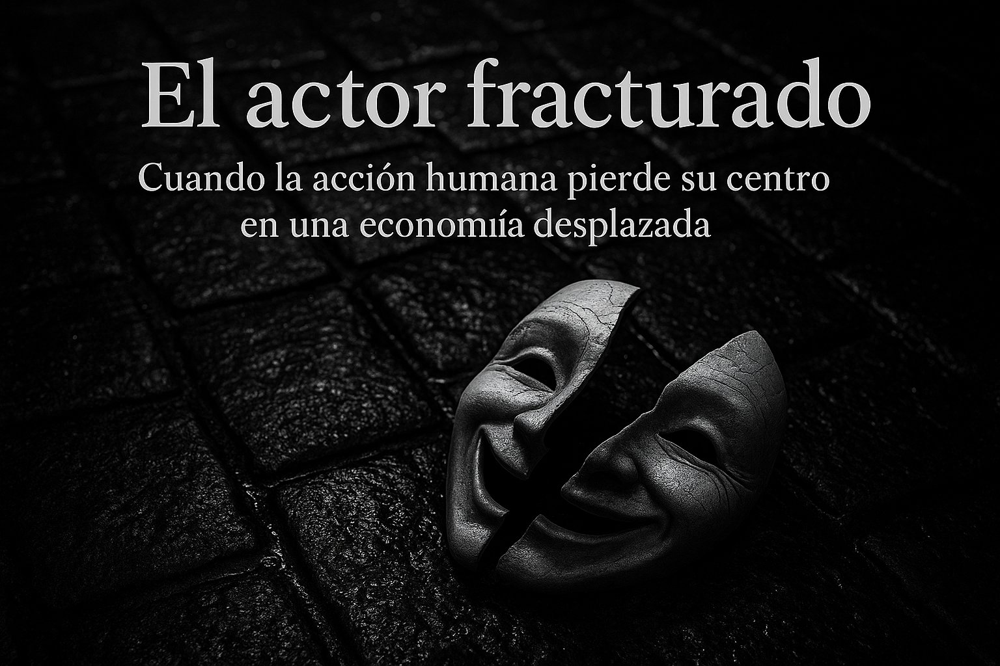

Trilogía · Artículo III
Cuando la acción humana pierde su centro en una economía desplazada

Durante décadas, fue el individuo —con sus decisiones, riesgos y proyectos— quien sostuvo el dinamismo de nuestras economías. Esa forma de entender el sistema, centrada en la libertad de actuar, fue el corazón del pensamiento liberal clásico y, más tarde, de la Escuela Austriaca. Bajo esa lógica, el sujeto económico no era una pieza del engranaje, sino el motor del sistema. Sin embargo, en este extraño periodo pospandémico y posglobalización, el actor —el individuo que decide, proyecta y actúa— parece haber perdido el sentido de su papel en la economía.
No estamos ante un colapso clásico ni ante una explosión repentina. Lo que vivimos es una desvinculación progresiva entre estructura económica y horizonte vital. El crecimiento continúa, pero sin dirección. Las métricas tradicionales siguen ofreciendo cifras positivas, pero no traducen expectativas. La macroeconomía, como dijimos en el primer artículo, ha aprendido a simular estabilidad mientras la realidad social se degrada.
En el segundo artículo abordamos la trampa del crecimiento: grandes empresas ineficientes que sobreviven gracias a tipos bajos artificiales, compras públicas dirigidas y subsidios encadenados. En ese entorno, muchas PYMES —más vulnerables, menos conectadas al poder político y con acceso limitado al crédito— compiten en clara desventaja estructural. El mercado ya no premia al más eficiente, sino al mejor conectado.
Pero ¿qué ocurre cuando esa trampa deja de ser solo empresarial y se traslada a las personas? La respuesta está en un síntoma que se repite en toda Europa, y de forma más aguda en España: el agotamiento de la clase media.
En los años 60, un joven podía aspirar a una vivienda, un coche, una familia. Hoy, ese horizonte se ha convertido en un privilegio. El acceso a la vivienda es prohibitivo, la natalidad se desploma, y el perro reemplaza al hijo en los balcones urbanos. El trabajo ya no garantiza autonomía, sino supervivencia compartida. La acción humana ya no proyecta: se limita a resistir.
La pérdida de horizonte no es solo un fenómeno interno. El desplazamiento del poder económico hacia Asia no implica solo fábricas o inversiones: supone también que las decisiones, las oportunidades y las expectativas se están moviendo lejos de nosotros. Y con ellas, el sentido de protagonismo que antes tenía Occidente.
Mientras Oriente acumula músculo productivo y visión estratégica, Occidente se dispersa en narrativas, subsidios y regulaciones infinitas. Europa, sin una estrategia industrial real, queda atrapada en la inercia de un estado de bienestar sobrecargado y políticamente bloqueado, donde cada intento de reforma choca con resistencias cruzadas. España, más vulnerable aún, corre el riesgo de ser arrojada por la fuerza centrífuga de ese giro global y terminar relegada al final de todos los rankings relevantes.
No se trata solo de economía, sino de orientación. En un entorno donde el Estado sustituye al mercado, y la renta sustituye al salario, la acción humana se desdibuja. En ausencia de incentivos reales, y bajo la consigna de "no tendrás nada y serás feliz", el individuo deja de actuar como sujeto económico para convertirse en espectador de su propia deriva.
Así se cierra esta trilogía con una invitación a la reflexión: no es solo el sistema el que colapsa, es el actor el que se fractura. Y cuando eso ocurre, ya no importa que el escenario siga en pie: la función ha terminado.